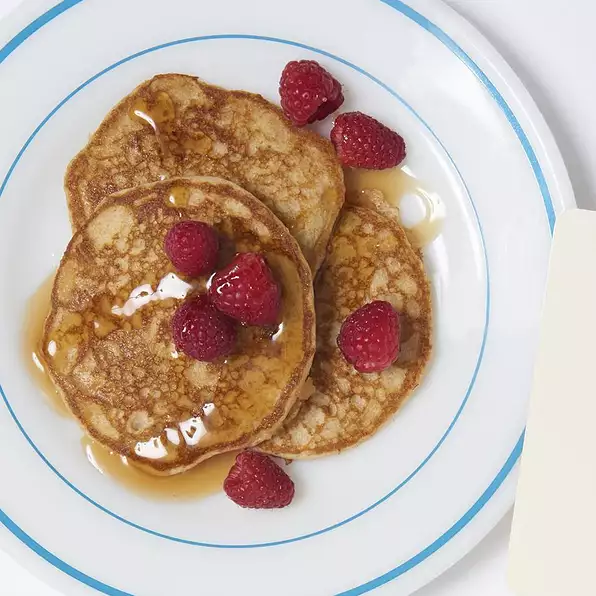

Whole Wheat Pancakes
- Prep: 20min
- Cook: 30min
- Total: 50min
- Servings: 4
- Yields: 4-5 pancakes
Ingredients
- 1 cup whole wheat flour
- ⅔ cup all-purpose flour
- ⅓ cup wheat germ
- 1½ teaspoons baking powder
- ½ teaspoon baking soda
- 2 tablespoons brown sugar
- 1 teaspoon salt
- 5⅓ tablespoons unsalted butter
- 2½ cups buttermilk
- 2 eggs, beaten
- 3 tablespoons unsalted butter
Steps
- In a food processor or in a large bowl,
combine the whole wheat flour, white flour,
wheat germ or oats, baking powder, baking soda,
brown sugar, and salt.
- Cut the butter into small pieces with a knife,
and add the butter to the flour-mixture. Mix until
the mixture has a sand-like consistency.
- Make a well in the center of the flour-butter mixture,
and add the buttermilk and eggs. Stir until the liquids
are fully incorporated.
- Heat a frying pan over medium heat and grease the surface
with 1 tablespoon of butter or oil. Ladle the batter onto
the surface to form 4 inch pancakes. Once bubbles form on
the top of the pancakes, flip them over, and cook them on
the other side for about 2 minutes.
Back to the top